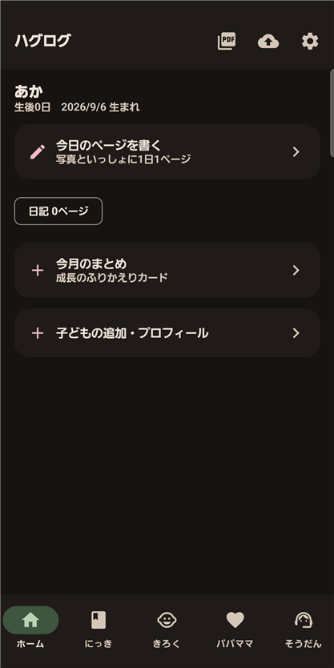
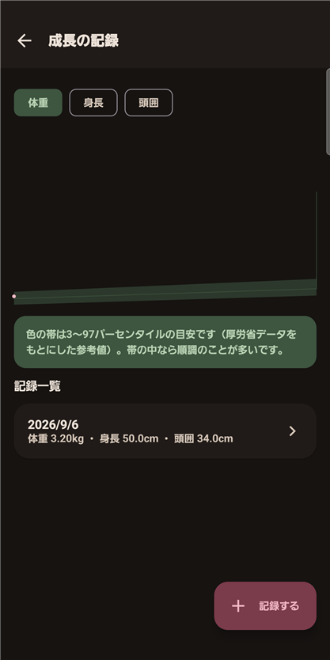
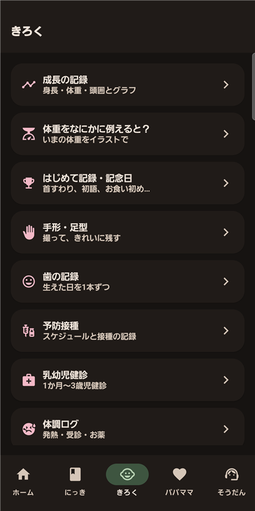

HagLog | Digital Baby Record Book — Photos & Growth
A child's day-to-day passes by in a blink. HagLog brings together a photo diary, growth records, hand and footprints, and health-handbook records into one place you can look back on later — a digital baby record book.
In short: just add a photo and a note each day, and a record of your child's growth builds up naturally.
HagLog
A daily photo diary, growth records, footprints, and a printable memory-book PDF. A digital baby record book that has room for parents too.
📲 Free DownloadWho is this for?
HagLog is a good fit if you:
- Want to keep a daily photo and note about what happened with your child
- Want to track health-handbook details like height, weight, and vaccinations digitally too
- Want to keep hand and footprints looking clean and preserved
- Want your records to eventually come together as something like an album
- Want to turn a year of monthly photos into one collage to send to family and friends
- Want to track your own mood or condition during the parenting years too
Key features
| Feature | What it does |
|---|---|
| A one-page photo diary, every day | Add the day's photo along with what happened, your child's mood and the weather — look back by calendar or timeline |
| A printable memory book (PDF) | Export a cover, profile, growth records and diary pages as a single PDF |
| Hand & footprint scan | Photograph an ink hand or footprint and the app cleans up the background automatically |
| Health-handbook records | Height, weight and head-circumference charts, plus vaccination and check-up schedules |
| Monthly photos (growth collage) | Keep one photo on each month-birthday and turn a year of them into a single collage image to send via LINE or save |
| Tooth chart | Pick from all 20 baby teeth on a front-view diagram of the mouth, then record the day each came in and add a photo. Typical eruption timing is shown too |
| Doctor visit summary | Fever, medicine, feeding and diaper counts for today, 3 days or 7 days, recent vaccinations and allergies on one screen, with space for your questions to the doctor. It shows your own records at the appointment; it does not diagnose anything |
| A childcare Q&A for worried moments | Guidance on fever, swallowing hazards and more, with a list of consultation contacts |
| Records for parents too | Track your own mood, sleep, and physical condition |



How it works
Open the app, pick a photo from today, and add a short note — that's one diary page done. Growth records, hand/footprints, and health-handbook entries each have their own screen you can add to any time. Once you've built up some records, export them as a keepsake PDF.
About the iPhone version
- The first iPhone version includes the daily photo diary (up to six photos at a time), growth records and charts, firsts and milestones, vaccination and infant checkup records, the memory book (PDF), the day they were born, more than one child, notes, and app lock (Face ID or your iPhone passcode).
- Of the features on this page, handprint and footprint scans, parenting Q&A and where to ask for help, the care log, records for parents, tooth records, monthly photos, letters to your child, the procedures checklist, search across records, backup and reminders are not in the current iPhone version.
- Free to use. The only ads are banners at the bottom of the screen, and there are no in-app purchases.
- Records are stored only on this iPhone and are never sent to the developer's servers. When you change iPhones, move them with a full iPhone backup (iCloud or a computer).
- The vaccination and checkup dates and the growth-chart band are general guides, not medical diagnosis or advice.
- Requirements: iPhone only, iOS 16.0 or later. English, Japanese, Simplified and Traditional Chinese.
For questions or to report a problem, please email yutti0726@gmail.com. Please include the app name and whether you use the iPhone or Android version.
Privacy policy for the iPhone version: HagLog for iPhone — Privacy Policy
FAQ
Q. Is HagLog free to use?
A. Yes. You can download it for free from Google Play. It shows ads: a banner at the bottom of the screen and a full-screen ad that may appear after you save a diary page. A one-time “Remove ads” purchase (480 yen in Japan; the price shown in Google Play applies) removes both.
Q. Can this replace a paper health handbook?
A. You can track height/weight/head-circumference charts, plus vaccination and check-up schedules. It's meant to complement your paper handbook with easy daily digital records, not fully replace it.
Q. Where are my photos and data stored?
A. Your diary, photos, growth records and other entries are saved on your device and never sent to the developer's servers. If device backup is on, they may be included in Android's automatic backup (Google Drive) or in a transfer to a new phone. No account is required.
Q. Can I turn the records into something like a keepsake album?
A. Yes. You can export a cover, profile, growth records, and diary pages as a single PDF.
Q. Can I record hand and footprints?
A. Yes. Photograph an ink hand or footprint and the app cleans up the background automatically.
Q. What are monthly photos (the growth collage)?
A. You keep one photo on each month-birthday. Even with a single photo you can make a collage image of the whole set, then send it via LINE or save it.
Q. How does the tooth chart work?
A. The 20 baby teeth are shown on a front-view diagram of the mouth. Tap a tooth to record the day it came in and add a photo. Teeth that have come in turn white, a camera icon marks those with a photo, and the photos are stored on your device and included in backups.
Q. What is the doctor visit summary?
A. It is a screen to show the doctor. It gathers fever, medicine, feeding and diaper counts for today, 3 days or 7 days, recent vaccinations and allergies from your records onto one screen. It only lays out your records; it does not diagnose anything.
Want to hold on to your child's "right now"?
Small daily records add up into a big memory you'll look back on. Start today with HagLog.
📲 Free DownloadQuestions and bug reports
For questions, bug reports or suggestions about this product, please use the contact form. The button below opens the form with the product name filled in. What to include in a bug report is listed on the contact page.
Open the contact form